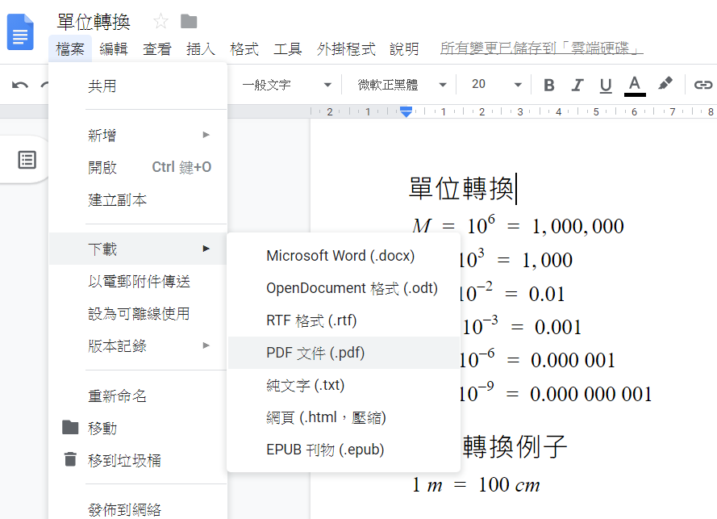
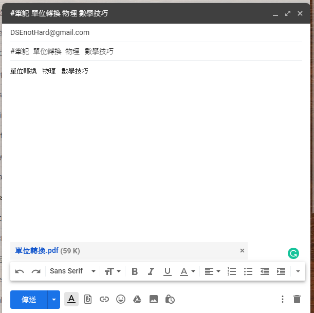

點樣貢獻？
目前提交嘅主要途徑係用 Email :
如果你曾經 DSE 有寫過筆記
又願意花少少時間，分享出嚟
可以影相，再提交去 Email
最希望你提交 PDF, Word
其次相片 .png .jpg
最後純文本 .txt
只要有心幫手，已經好感激你哋<3
收到 PDF 或者相片之後
會同步喺網站呢度同埋 GitHub 更新
*這裏有樣很重要的事情要注意
請不要提供有版權的筆記
（不要提供 版權唔係屬於你自己的筆記，例如補習社、學校筆記）
ヽ(・ω・｀)ノ唔好意思，如果我乜筆記都冇
有咩可以做？
梗係有啦，你可以寫你讀書、考試嘅心得，提交心得
幫 DSE 考生打打氣
仲有就係 —— 幫我哋宣傳下，畀個網站師弟妹
(っ ̯ -｡) 講咗咁多，都唔係幾知要做咩喎，不如你示範下？
影相 / 用 Google 文件整好咗一份筆記

直接轉換 PDF 出嚟 （推薦用 Google 文件 嚟做筆記
Email 到 DSEnotHard@gmail.com

標題寫返 #筆記 方便分類
寫埋份嘢屬於咩科，以及喺嗰一科之下嘅分類
如果你想被添加到 貢獻者名單，請在最後加上 "by xxx(你的名字)"